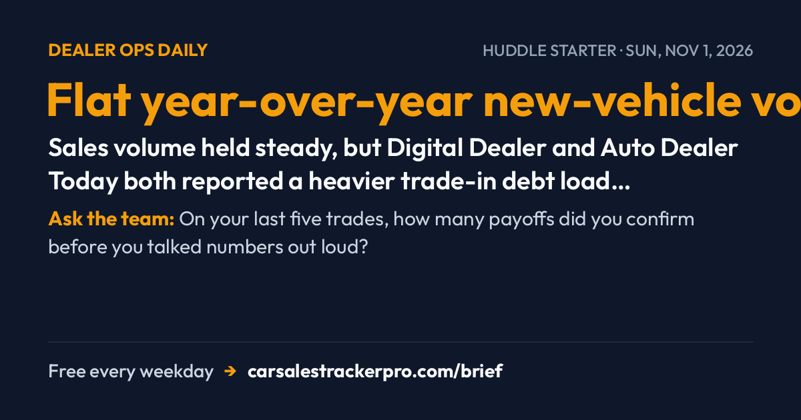

The Week Negative Equity Walked Back Onto Your Lot


Three threads ran through this week, and they braid together: trade-ins are arriving underwater more often, the software your store runs on turned into a security question, and AI quietly moved from the sales pitch into the paperwork. None of it broke on Friday. All of it changes how you work a deal Monday.
☕ HUDDLE STARTER · read it aloud in 60 seconds
Flat year-over-year new-vehicle volume, record Q3 financing amounts — Sales volume held steady, but Digital Dealer and Auto Dealer Today both reported a heavier trade-in debt load underneath it. The headline number is hiding the lane.
Ask the team: On your last five trades, how many payoffs did you confirm before you talked numbers out loud?
• Top-Stories
A New Wave of Trade-In Debt Is Building in the Lane
Two separate reports landed four days apart saying the same thing from different angles. Auto Dealer Today's Q3 Dealer Debrief (Oct. 23) reported new-vehicle financing amounts at record levels with negative equity still climbing — exact figures weren't published, so treat it as directional. Digital Dealer followed on Oct. 27 with the floor-level version: new-vehicle volume is roughly flat year over year, but a heavier trade-in debt load is building underneath that calm headline. The pattern that emerged this week is that the sales number is no longer telling you what the lane looks like.
Use it today: Make the payoff quote the first move of every trade conversation this week, not the last. If a customer financed in the last 24 months, assume upside-down until the desk confirms otherwise — and show them the math before the four-square does.
Sources: Auto Dealer Today · Digital Dealer
Cox Automotive Confirms VinSolutions Cyber Incident, Says It's Contained
Cox Automotive confirmed a cybersecurity incident affecting its VinSolutions CRM and said the activity has been contained, according to Car Dealership Guy News (Oct. 26) citing Cox's own statement; not independently verified beyond that confirmation. The company has not disclosed how many dealers or customer records were involved, which is the part still open a week later. Your CRM holds credit applications, driver's license images, and payoff data — the same categories a customer will ask about if this gets broader coverage.
Use it today: Ask your GM or IT contact one question Monday: was our instance confirmed affected? Then rotate any shared CRM logins on your desk, and have a plain-language answer ready for the customer who asks whether their information was in there.
Sources: Car Dealership Guy News
AI Moved From the Pitch Deck Into the Deal Jacket
Three stories this week were really one story. F&I and Showroom (Oct. 26) warned that AI now touches pricing, lead-scoring, and F&I workflows, and that an algorithm's recommendation doesn't remove a human's duty to document why a customer got a given rate or add-on. CarEdge's CEO told CBT News (Oct. 27) that shoppers arriving with AI research are surfacing price discrepancies that used to go unnoticed. And LaFontaine Auto Group is deploying UVeye's AI inspection scanners chain-wide, per Automotive Dive (Oct. 26). Same arc: the machine is now in the room on both sides of the desk.
Use it today: Run your own listings through an AI assistant by VIN and fix any mismatch before a customer brings it to you. And when a system spits out a rate or an add-on, get the business reason in writing — that's the file you'll want if the deal is ever questioned.
Sources: F&I and Showroom · CBT News · Automotive Dive
• Data-Recap
The week in numbers
• Record — Q3 new-vehicle financing amounts, per Auto Dealer Today's Q3 Dealer Debrief (Oct. 23); exact figures weren't published, so directional only. Bigger amounts financed today is tomorrow's payoff problem. • Flat — new-vehicle sales volume year over year, per Digital Dealer (Oct. 27). Steady volume is hiding a worse trade mix underneath it. • Below September — the forecast for October retail deliveries, per F&I and Showroom (Oct. 26), with more buyers reaching for longer terms to make payments work. Know what the extra months cost before you offer them as the fix. • 30 vs. 20 mpg — the 2027 Hyundai Palisade hybrid against the V-6, per Automotive Dive (Oct. 26). A mileage gap a shopper can do in their head beats a feature list. • Zero — dealers or records Cox has publicly disclosed as affected in the VinSolutions incident, per Car Dealership Guy News (Oct. 26). Unknown scope is not the same as small scope; answer customers with what's confirmed, nothing more.
Use it today: Pick one of these for your Monday huddle. The flat-volume-plus-rising-debt pairing is the one that changes how your floor opens a trade conversation.
Sources: Auto Dealer Today · Digital Dealer · F&I and Showroom · Automotive Dive
• Watch-Next-Week
What to watch next week
• October sales results. Automakers and industry forecasters report October volume in the first days of November — the test of the F&I and Showroom forecast (Oct. 26) that deliveries would slip from September on affordability pressure. Watch whether term length, not price, did the heavy lifting. • NHTSA's compliance timeline on impaired-driving tech. CBT News reported (Oct. 23) that Congress advanced a federal impairment-detection mandate for future model years; NHTSA has not published a timeline. Any agency posting is the thing that turns showroom rumor into a real date. • Unifor and Stellantis Canada. Members authorized a potential strike with no date set, per CBT News (Oct. 23). If a deadline appears, Jeep, Ram, Dodge, and Chrysler allocation is the first thing to ask your inventory manager about.
Also on the radar: Reynolds and Reynolds said it will spotlight its AutoVision CPO experience at Used Car Week (CBT News, Oct. 27), and the Scout Motors direct-to-consumer challenge keeps moving in California after a court let the dealers' case proceed (CBT News, Oct. 26).
Use it today: Next week we turn to the buy-sell market — multiples and megadealer M&A. This week's Lani Automotive Group purchase of a Mount Pleasant, Iowa store (CBT News, Oct. 27) is a small preview of a market that decides who signs your pay plan.
Sources: F&I and Showroom · CBT News · CBT News · CBT News
• Tool-Of-Week
Tool of the week — CarSales Tracker Pro (Sponsored)
In a week built around financing amounts, term length, and trade payoffs, the number easiest to lose track of is your own. CarSales Tracker Pro is an iOS app for logging every deal, commission, and spiff so you know your real number before payroll does — useful when more of your gross is moving into F&I products and longer-term structures. Built by the team behind this newsletter.
Use it today: Log this week's deals in one sitting and compare your tracked total against your last statement before the next one posts.
Sources: CarSales Tracker Pro
🛠️ Tool of the day (Sponsored)
Week was dominated by F&I structure, negative equity, and payment stretching across store-ops and f&i sections — a deal-and-commission tracker matches the section mix semantically.
If someone on your floor is still quoting trades without pulling the payoff first, forward them this issue before Monday's first up.
Commission calculator
Estimate this month's check from units, gross, pack and minis.
ComparisonPay plan comparison
Put two plans side by side under the same month.
Free trackerTrack every deal
Log each car and watch your month-to-date pay climb.